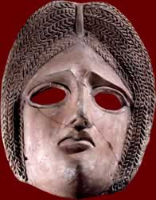

Aeschylus
|
|

A theatre mask from a tragedy |
Aeschylus was an Athenian playwright. He was the first great tragedian. He is believed to have written 70 - 90 plays, including Persians, Seven against Thebes and Suppliants. He is believed to have died in Sicily, when an eagle dropped a tortoise on his head!